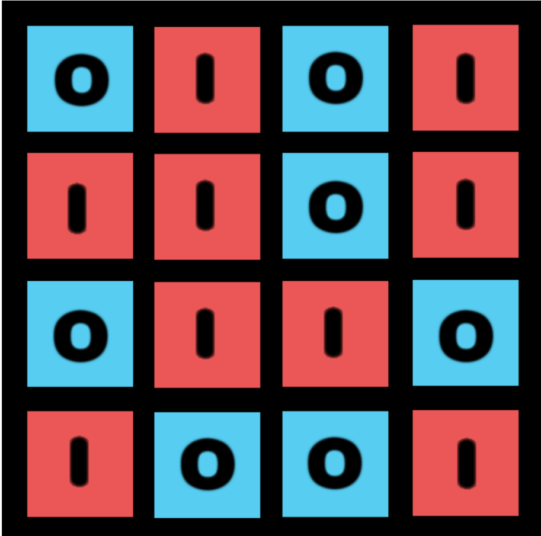

<ul>
    <li>Goal is to switch all tiles to one color.</li>
    <li>User can change color of tiles by interacting/clicking, which toggles status between 0 and 1.</li>
    <li>Color changes on neighboring tiles in relation to what tile is clicked</li>
    <li>Additional tiles' status are altered based on binary combinations</li>
</ul>

